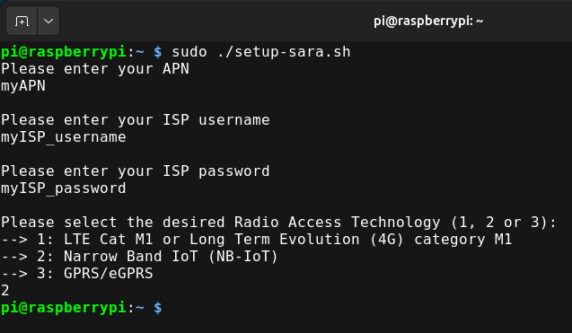

GateBerry - Expansion Boards¶
The GateBerry PLC has 1 slot for additional communication. Check the pinout in the block diagram.
4G (LTE CAT M1 / NB-IoT)¶
4G LTE CAT M1/NB-IoT are cellular communication technologies designed for the Internet of Things (IoT). They provide low-power, wide-coverage, and cost-efficient connectivity, ideal for devices that transmit small amounts of data such as sensors, smart meters, and trackers.
Module¶
The module used to provide LTE CAT M1 and NB IoT communication is the Ublox SARA range, specifically the modules:
- SARA-R412M
- SARA-R422M8S
Here are some of their manuals:
Hardware Setup¶
When purchasing a GateBerry equipped with the cellular communication expansion module, an additional output is provided for external antennas through female SMA coaxial connectors, which are directly linked to the communication module.
The hardware assembly should appear as shown in the following image:
The device includes a SIM card slot, located as shown in the image below:
SIM recommendation
The module only supports Micro SIM cards. If you have a Nano SIM, please use a Micro SIM adapter to ensure proper fit and to prevent connector damage.
It is recommended to use precision tweezers when inserting or removing the SIM card to protect both the connector and the card.
Software Setup¶
This setup allows us to configure the connection with the module. It only needs to be done once.
-
Check if
dtoverlay=uart3ordtoverlay=uart2(Depending on the Raspberry PI version) in/boot/firmware/config.txtLook for these configuration lines (RPIv4)
Look for these configuration lines (RPIv5)
If it does not exist, it should be added, and then reboot the device to make the changes effective.
-
Copy or Download the setup
Warning
If your SIM needs to be unlocked using a PIN number, this script will not work for it.
Check it here: setup-sara.sh
or, if you have an internet connection, download this file as follows
To make the script executable, run the following command:
Next, execute the script with administrative privileges:
During execution, the script will prompt you to enter your connection credentials, as shown below.

Once the process is complete, two system services will be created:
- pppd.service: responsible for creating the ppp0 interface to simplify the connection process.
- check-ppp0.service: ensures that the interface and connection are functioning correctly.
Working Test & Troubleshooting¶
-
Check service status
Run the following commands to verify that the services are active:
-
Stop the services
Before executing the communication test script, stop the services to prevent communication conflicts with the module:
-
Run the test script
To test communication with the module, execute the configuration script in NB mode. This step is only intended to confirm that communication is working correctly.
-
Verify network interface
If the script completes successfully, list the network interfaces with:
You should see the ppp0 interface. To verify network access, run: -
Restart the services
After completing the test, restart the services using:
6. Restore system stateFinally, reboot the system to return to its normal operating state:
CAN¶
CAN (Controller Area Network) is a robust communication protocol designed for real-time data exchange between electronic control units (ECUs) in vehicles and industrial systems. It enables reliable, high-speed, and error-resistant communication without requiring a central computer, making it ideal for automotive, industrial, and automation applications.
Module¶
The selected module for enabling GateBerry PLC to communicate via the CAN protocol is the MCP2515, connected to the PLC through SPI. It allows configuring a 120 Ω termination resistor (selectable at the time of PLC purchase).
Important features and values to consider¶
| Interface type | CAN Bus |
| Communication speed (baud rate) | Configurable |
| Connectors and wiring | M3 adapter connector (H (CAN High) and L (CAN Low)) |
| Termination resistor | 120 ohms (selectable at the time of PLC purchase) |
Hardware setup¶
CAN Bus Connection¶
The PLC can be connected to the CAN bus as shown in the image below:
Termination resistor configuration
When purchasing the PLC you must select whether you will use the PLC at one end of the line or in the middle of the bus.
- If you use it at one end, select the default option, where this resistor is built in.
- Otherwise, select the option that eliminates this termination resistor.
Software setup¶
To configure the CAN module and establish communication with the PLC, follow these steps:
Edit the firmware configuration file /boot/firmware/config.txt:
Add the following overlay:
Parameters explanation:- spi0-0: MCP2515 connected to SPI bus with CS on gpio 8.
- oscillator=10000000: 10 MHz oscillator.
- interrupt=21: interrupt pin.
- speed=125000: default baud rate 125 kbps.
Save and exit with Ctrl + S and Ctrl + X.
Reboot the PLC to apply changes:
Verify correct module initialization, with the command:
You can also check with:ifconfig can0 or ip a
If CAN doesn't appear as UP, use this command to change its status:
Working Test & Troubleshooting¶
To ensure the module works correctly, use the tools provided by the can-utils library.
Install can-utils
- 111: CAN message identifier.
- FF: data sent in hexadecimal.
This command allows testing communication by sending test messages on the CAN network and verifying reception on other connected nodes.
LoRa¶
LoRa is a low-power, long-range wireless communication technology designed for the Internet of Things (IoT). It enables long-distance data transmission with minimal energy consumption, making it ideal for battery-powered devices such as sensors, trackers, and smart city applications. It operates on unlicensed radio frequencies, reducing deployment costs and increasing flexibility.
Modules¶
The selected modules to enable LoRa communication on GateBerry are:
- Europe & Asia: RN2483A
- America: RN2903A
Hardware Setup¶
When purchasing a GateBerry equipped with the LoRa communication expansion module, an additional output is provided for external antennas through female SMA coaxial connectors, which are directly linked to the communication module.
The hardware assembly should appear as shown in the following image:
Software setup¶
Both modules communicate via serial interface. On GateBerry, the assigned serial port is: /dev/exp_serial
First we have to set the serial port baud rate to 57600:
Then reset the module via the GateBerry digital output: Thats it!Working Test & Troubleshooting¶
Here we share the command manual to fully configure your LoRa module.
-
RN2483 LoRa® Technology Module Command Reference User’s Guide
-
RN2903 LoRa™ Technology Module Command Reference User’s Guide
These are the basic commands we can use to check that there is communication with the LoRa module.
In this way we will see what the LoRa module responds to us, while we send commands using another terminal.
Info
After resetting the module with: sudo ~/test/GATEBERRY_V9/GATEBERRY/set-digital-output EXP_RST 1, while monitoring the serial port, the module will automatically send version and model information.
Similar to:
RN2483 1.0.5 Oct 31 2018 15:06:52
Similar to:
RN2903 1.0.5 Nov 06 2018 10:45:27
Warning
Frequency must be set according to the operating region. Before setting your LoRa module's frequency, check the authorized ISM bands in your country. Each region of the world has different allocations, so using an unauthorized frequency can cause interference with critical services (such as telecommunications, defense, or aviation) and may be subject to legal penalties.
- Asia:
- Europe:
- America:
ok
In some cases the module can return this message:
invalid_param
Make sure the baud rate is correct and that you end the commands with a: \r